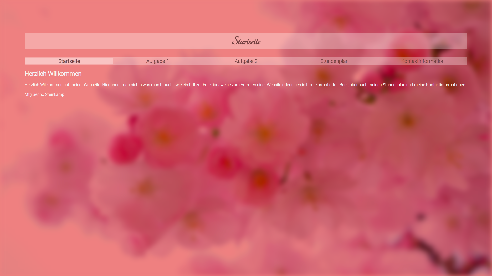
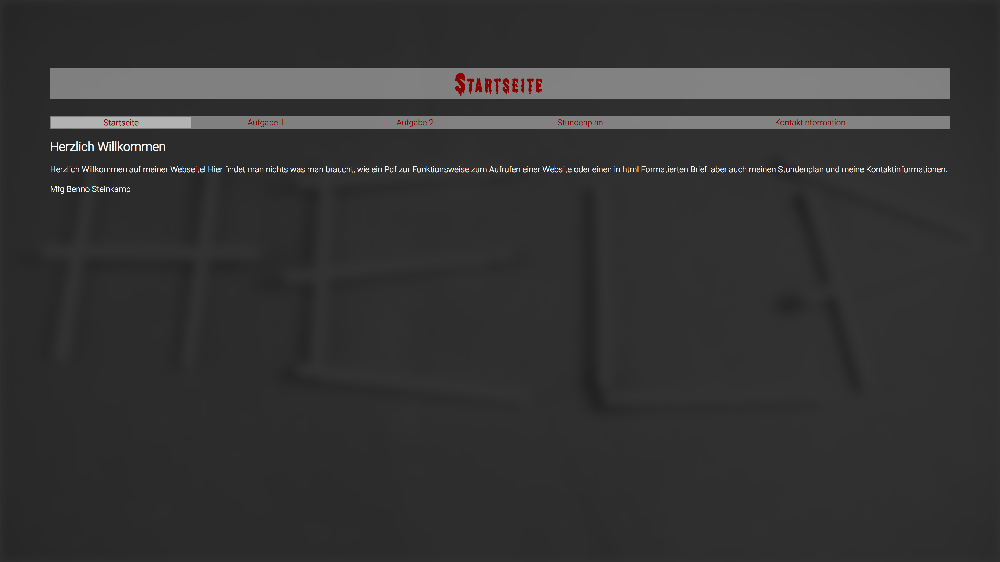
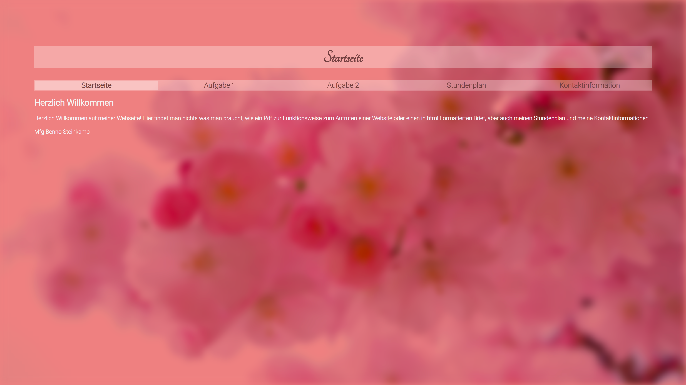
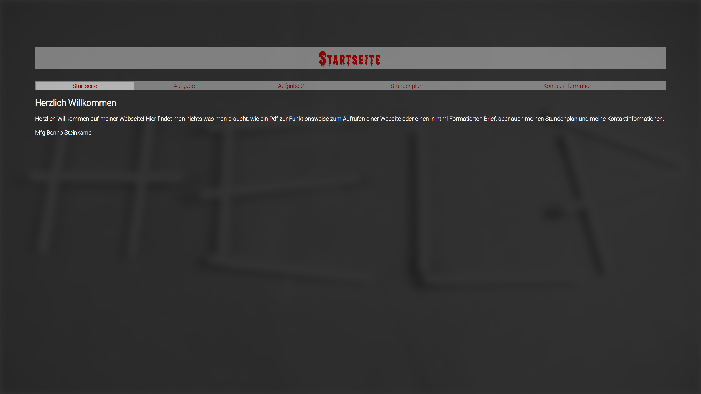

Einführung HTML
Die Aufgabenstellung war, einen Brief zu schreiben und dann in HTML zu Formatieren. Gegeben war bereits eine Vorlage, deshalb bot sich an den Beispieltext durchzugehen und relevante Daten durch persönliche Daten ersetzt. Zur Bearbeitung des HTML Quellcodes wurde Visual Studio Code verwendet, sowie Google Chrome zur Überprüfung des Codes während der Bearbeitung. Für die Dokumentation wurde Microsoft Word genutzt. Als Hilfsquellen wurden https://www.w3schools.com/ und https://developer.mozilla.org/enUS/docs/Web/HTML genutzt.
Herangehensweise
Die Aufgabenstellung war, einen Brief zu schreiben und dann in HTML zu Formatieren. Gegeben war bereits eine Vorlage, deshalb bot sich an den Beispieltext durchzugehen und relevante Daten durch persönliche Daten ersetzt. Zur Bearbeitung des HTML Quellcodes wurde Visual Studio Code verwendet, sowie Google Chrome zur Überprüfung des Codes während der Bearbeitung. Für die Dokumentation wurde Microsoft Word genutzt. Als Hilfsquellen wurden https://www.w3schools.com/ und https://developer.mozilla.org/enUS/docs/Web/HTML genutzt.
Mehrseitige HTML-Seite
Die Aufgabe bestand darin, eine mehrseitige Webseite in html zu schreiben, formatieren und strukturieren. Zunächst wurden die durch die Aufgabenstellung gegebenen Rahmenbedingungen auf Dateiebene geschaffen, also wurden die index-Datei, sowie die die html-Dateien für die vier Unterseiten erstellt, und mit einem html-Grundgerüst versehen. Danach wurde die Navigation erstellt, welche auf allen Seiten persistent ist. Dann wurde die Navigation angepasst und die jeweils ausgewählte Seite hervorgehoben. Nun wurden alle Seiten mit Inhalt gefüllt. In diesem Schritt wurden auch die Ordner für verwendete Ressourcen erstellt. Zum Schluss wurden die Seiten validiert. Zum Schreiben des Codes wurde Visual Studio Code, zum Testen wurden Google Chrome und Safari, sowie der Markup Validation Service des WWC verwendet. Für die Dokumentation wurde Microsoft Word genutzt.
Herangehensweise
Die Aufgabe bestand darin, eine mehrseitige Webseite in html zu schreiben, formatieren und strukturieren. Zunächst wurden die durch die Aufgabenstellung gegebenen Rahmenbedingungen auf Dateiebene geschaffen, also wurden die index-Datei, sowie die die html-Dateien für die vier Unterseiten erstellt, und mit einem html-Grundgerüst versehen. Danach wurde die Navigation erstellt, welche auf allen Seiten persistent ist. Dann wurde die Navigation angepasst und die jeweils ausgewählte Seite hervorgehoben. Nun wurden alle Seiten mit Inhalt gefüllt. In diesem Schritt wurden auch die Ordner für verwendete Ressourcen erstellt. Zum Schluss wurden die Seiten validiert. Zum Schreiben des Codes wurde Visual Studio Code, zum Testen wurden Google Chrome und Safari, sowie der Markup Validation Service des WWC verwendet. Für die Dokumentation wurde Microsoft Word genutzt.
CSS Anpassung
Mehrseitige Webseite mit css in drei Verschiedenen Versionen gestylt: romantisch, düster und dem eigenen Empfinden entsprechend. Zunächst wurde ein Design in einer css-Datei für die erste Version erstellt und dann so verallgemeinert, dass lediglich Farben und Bilder für Version zwei und drei verändert werden mussten. Nun wurde der Inhalt der css-Datei in den Kopf der einzelnen html-Dateien kopiert.. Zum Schluss wurden die Seiten validiert. Zum Schreiben des Codes wurde Visual Studio Code, zum Testen wurden Google Chrome und Safari, sowie der Markup Validation Service des WWC verwendet.
 



Herangehensweise
Mehrseitige Webseite mit css in drei Verschiedenen Versionen gestylt: romantisch, düster und dem eigenen Empfinden entsprechend. Zunächst wurde ein Design in einer css-Datei für die erste Version erstellt und dann so verallgemeinert, dass lediglich Farben und Bilder für Version zwei und drei verändert werden mussten. Nun wurde der Inhalt der css-Datei in den Kopf der einzelnen html-Dateien kopiert.. Zum Schluss wurden die Seiten validiert. Zum Schreiben des Codes wurde Visual Studio Code, zum Testen wurden Google Chrome und Safari, sowie der Markup Validation Service des WWC verwendet.
CSS Tabellen & Formulare
Tabellen, Formulare und Listen mit css gestylt. Zunächst wurde ein Gestell der Webseite mit html erstellt und der gegebene Inhalt eingefügt und zunächst nur mit html formatiert. Danach wurde die Tabelle, das Formular und der Rest der Webseite mit css gestylt. Zum Schluss wurden die Seiten validiert. Zum Schreiben des Codes wurde Visual Studio Code, zum Testen wurden Google Chrome und Safari, sowie der Markup Validation Service des WWC verwendet.
Herangehensweise
Tabellen, Formulare und Listen mit css gestylt. Zunächst wurde ein Gestell der Webseite mit html erstellt und der gegebene Inhalt eingefügt und zunächst nur mit html formatiert. Danach wurde die Tabelle, das Formular und der Rest der Webseite mit css gestylt. Zum Schluss wurden die Seiten validiert. Zum Schreiben des Codes wurde Visual Studio Code, zum Testen wurden Google Chrome und Safari, sowie der Markup Validation Service des WWC verwendet.
JavaScript
Slideshow mit css und Javascript erstellt. Zunächst wurde ein Gestell der Webseite mit html erstellt und Platzhalter eingefügt und zunächst nur mit html formatiert. Danach wurde die Slideshow mit css gestylt. Dann wurde die Animation in css erstellt. Danach wurde mit Javascript eine Initialisierung für die Slideshow erstellt. Zum Schluss wurden die Bilder bearbeitet und zurechtgeschnitten validiert. Zum Schreiben des Codes wurde Visual Studio Code, zur Bildbearbeitung Adobe Photoshop und zum Testen Google Chrome und Safari, sowie der Markup Validation Service des WWC verwendet.
Herangehensweise
Slideshow mit css und Javascript erstellt. Zunächst wurde ein Gestell der Webseite mit html erstellt und Platzhalter eingefügt und zunächst nur mit html formatiert. Danach wurde die Slideshow mit css gestylt. Dann wurde die Animation in css erstellt. Danach wurde mit Javascript eine Initialisierung für die Slideshow erstellt. Zum Schluss wurden die Bilder bearbeitet und zurechtgeschnitten validiert. Zum Schreiben des Codes wurde Visual Studio Code, zur Bildbearbeitung Adobe Photoshop und zum Testen Google Chrome und Safari, sowie der Markup Validation Service des WWC verwendet.
Layout CSS
Webseite anhand einer Vorlage mithilfe eines Frameworks erstellen. Zunächst wurde ein Gestell der Webseite in html erstellt der Inhalt eingefügt und zunächst nur mit html formatiert. Danach wurde die Webseite der Vorlage mit css von oben nach unten angepasst. Zum Schreiben des Codes wurde Visual Studio Code und zum Testen Google Chrome und Safari, sowie der Markup Validation Service des WWC verwendet.
Herangehensweise
Webseite anhand einer Vorlage mithilfe eines Frameworks erstellen. Zunächst wurde ein Gestell der Webseite in html erstellt der Inhalt eingefügt und zunächst nur mit html formatiert. Danach wurde die Webseite der Vorlage mit css von oben nach unten angepasst. Zum Schreiben des Codes wurde Visual Studio Code und zum Testen Google Chrome und Safari, sowie der Markup Validation Service des WWC verwendet.
Onepage/Landingpage
Erstellen einer One-Page Webseite mit Bootstrap. Als erstes wurde das Logo in Adobe Illustrator erstell. Danach wurde ein Template aus der Bootstrap Template Bibliothek heruntergeladen. Dann wurde das Layout an die Vorgaben angepasst. Als nächstes wurden die Details in die Abschnitte eingefügt. Zum Schluss wurde das Video gefilmt und dann in die Webseite eingebunden. Zum Schreiben des Codes wurde Visual Studio Code und zum Testen Google Chrome und Edge, sowie der Markup Validation Service des WWC verwendet.

Herangehensweise
Erstellen einer One-Page Webseite mit Bootstrap. Als erstes wurde das Logo in Adobe Illustrator erstell. Danach wurde ein Template aus der Bootstrap Template Bibliothek heruntergeladen. Dann wurde das Layout an die Vorgaben angepasst. Als nächstes wurden die Details in die Abschnitte eingefügt. Zum Schluss wurde das Video gefilmt und dann in die Webseite eingebunden. Zum Schreiben des Codes wurde Visual Studio Code und zum Testen Google Chrome und Edge, sowie der Markup Validation Service des WWC verwendet.
Über diese Webseite
| Genutzte Frameworks | ||
|---|---|---|
| Bootstrap | jQuery | MFG Labs icon set |